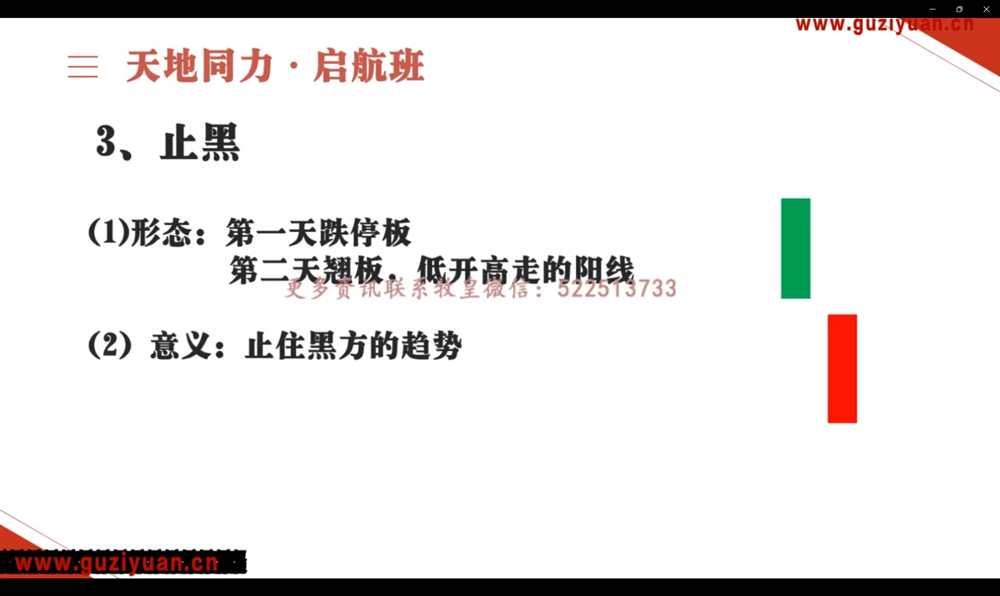

本节记录 K 线理论
# 单 K
-
攻击线：7% 以上长红线，5% 中阳线，3% 小阳线；对于大市值股票如茅台，小涨幅就已经是暴涨
-
整理线：
- 震荡线：幅度大，影线长。变盘的信号
- 聚量线：幅度小，量能大。一旦突破就是强力支持，量大不涨必有压
-
停滞线：一字最强，T 字弱一些
# 双 K
# 两根攻击线
# 强势攻击状态
- 跳。最强，一红定江山，如果（1）能突破（2）爆量，即最好的
- 连。影线长短代表分歧大小，最好没量 + 大单分时流入
- 插。低位往往是洗盘；高档是大分歧，很危险。需要看第三天决定
- 并。一般是洗盘，需要高开确认。中间加线就是炮塔
- 落。比较弱了，如果是洗盘，昨天的人全被套了，也太狠了。低档好一点，高位不好，要看第三天确认
# 特殊的攻击形
- 飘。涨停 + 高开低走。开盘涨太多，多方不稳
- 脱。涨停 + 加速 + 高开低走。和飘一样，下杀势能更大
- 止。跌停 + 低开高走，止住黑方的趋势

- 离。跌停 + 加速 + 反包大阳线。下跌力度衰竭，和脱红对应
- 蔽
- 玉
# 攻击 + 整理
- 反
- 阻，比反好一些，不一定主力就要调整了
- 钉
- 穿
- 化
- 孕
# 整理 + 攻击
- 仙人指路
- 反转